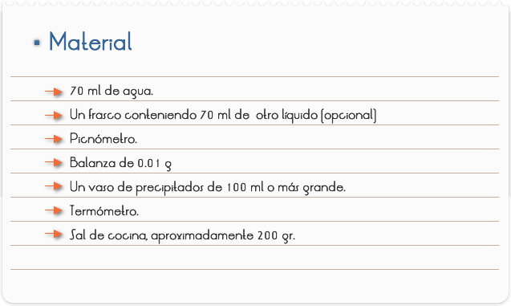
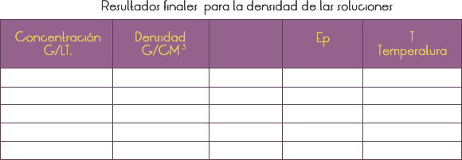

Introducción
Principio de Arquímedes:
"todo cuerpo sumergido en un fluido experimenta un empuje vertical hacia arriba igual al peso del fluido desalojado".
Datos que podemos conocer del cuerpo (en el vacío) antes de Sumergirlo. Por medidas directas podemos conocer: masa y volumen y a partir de estos datos su densidad: d=m/v. Conocida la masa se puede hallar el peso en el vacío: p=m•g
La densidad nos da una idea de como están agrupados los átomos en el cuerpo. Cuanto más pesados sean los átomos y más juntos estén más densos será el cuerpo.
Si la densidad del cuerpo es igual o mayor que la del líquido el cuerpo quedará totalmente sumergido. Podemos conocer otras muchas cosas: color, conductividad, tipo de compuesto…, pero no vienen al caso ahora. ¿Qué podemos conocer del líquido? (el p. de Arquímedes se aplica a cualquier Fluido aunque aquí vamos a tratar sólo de líquidos). por medidas directas: masa y volumen conocida la masa y el volumen podemos conocer la densidad del líquido: dl=ml / v podemos conocer otras muchas cosas: viscosidad, tensión superficial, conductividad, composición química .., pero no viene al caso ahora cuerpo sumergido (magnitudes que podemos conocer) al ir introduciendo el cuerpo en el líquido se va desalojando paulatinamente un volumen de líquido igual al volumen que se va introduciendo del cuerpo (un volumen sustituye al otro) el líquido reacciona contra esa intromisión empujando al cuerpo con la misma fuerza que utilizaba para mantener al líquido que estaba allí (en el lugar que está ahora el cuerpo). La fuerza empuje es igual al peso del líquido desalojado (el que estaba allí). El cuerpo se sumerge hasta que el empuje del líquido iguala el peso que tiene el cuerpo en el vacío. El peso del cuerpo en el vacío es: (la fuerza con que lo atrae la tierra)=masa del cuerpo * gravedad=vc•d cuerpo •g el empuje no depende ni del tamaño del recipiente donde está sumergido el objeto ni de la profundidad a que se encuentre el cuerpo. (es igual en un lago que en el océano siempre que tengan agua de la misma densidad, y es igual a 20m que a 40 m de profundidad- a profundidades muy grandes la densidad aumenta-). Peso del líquido desalojado=masa de líquido desalojado por la gravedad= pl=ml•g masa de líquido desalojado=volumen de líquido desalojado por la densidad del líquido=ml=vl•dl el volumen de líquido desalojado es igual al volumen del cuerpo sumergido. e=v sumergido líquido g el equilibrio se produce cuando el peso del cuerpo en el vacío=empuje si el peso es mayor que el empuje máximo (cuando está todo hundido) el cuerpo se desplaza hacia el fondo. si utilizas unidades del s.i. ( metro cúbico, kg/ m3, 9.8 m/s2) el empuje se obtendrá en Newton.
DETERMINACIÓN DE DENSIDAD: EL PICNÓMETRO
Introducción
El picnómetro es un instrumento sencillo utilizado para determinar la densidad de líquidos con mayor precisión. Su característica principal es la de mantener un volumen fijo al colocar diferentes líquidos en su interior. Esto nos sirve para comparar las densidades de dos líquidos pesando el picnómetro con cada líquido por separado y comparando sus masas. Es usual comparar la densidad de un líquido respecto a la densidad del agua pura a una temperatura determinada, por lo que al dividir la masa de un líquido dentro del picnómetro respecto de la masa correspondiente de agua, obtendremos la densidad relativa del líquido respecto a la del agua a la temperatura de medición. El picnómetro es muy sensible a los cambios de concentración de sales en el agua, por lo que se usa para determinar la salinidad del agua, la densidad de líquidos biológicos en laboratorios de análisis clínicos, entre otras aplicaciones.
Objetivo
1. Determinar la densidad del agua y otros líquidos haciendo uso del picnómetro.
2. Determinar la variación de la densidad con la concentración de diferentes soluciones de sal.

A) Densidad del agua: La medición se realizará en equipo.
1) Anote el valor del volumen del picnómetro que tiene registrado en la pared del frasco.
2) Calibre la balanza mediante el tornillo especial que posee el instrumento.
3) Enseguida mida la masa del picnómetro vacío, teniéndose el cuidado de que se encuentre totalmente seco y limpio.
4) Llénelo completamente de agua y enseguida colóquele su tapón. Al colocarlo, parte del líquido se derramará y por lo tanto deberá secar perfectamente el recipiente y el tapón por fuera. Si queda líquido en las paredes externas provocará error en la medición. Asegúrese de que esto no suceda.
5) Mida la masa del picnómetro lleno de líquido.
6) Quite el tapón al picnómetro y sin vaciarlo vuelva a llenarlo completamente. Colóquele el tapón, séquelo bien por fuera y vuelva a medir su masa.
7) Repita nuevamente el paso 6 para tener tres mediciones que le permitirán obtener tres valores de densidad para el agua.
8) Mida la temperatura del agua.
B) Densidad de una solución de agua salada como función de la concentración de sal .
1) Limpie el picnómetro y séquelo.
2) Obtenga diferentes concentraciones de sal en agua para obtener soluciones aproximadas de 5 g/lt., 10 g/lt., 20 g/lt., 30 g/lt. y 50 g/lt.
3) Sugerencia: Será suficiente preparar soluciones de 100ml de cada concentración, disolviendo la cantidad de sal correspondiente para obtener la concentración deseada. Puede empezar con la concentración más baja para optimizar la cantidad de sal y reutilizar la solución sobrante para obtener una solución más concentrada.
4) Determine la densidad de cada concentración utilizando el picnómetro, siguiendo el procedimiento del paso 3 al 8 de la parte (A).
5) Obtenga una gráfica de la densidad contra la concentración en gramos/litro.
V. Actividades a realizar
A) Para el agua.
1.Con la masa de agua y el volumen correspondiente, encuentre la densidad del agua.
2.Obtenga tres valores de densidad para el agua, correspondientes a los tres valores de masa.
3.Con los tres valores de densidad, obtenga:
-La densidad promedio del agua.
-Su desviación promedio.
-El error porcentual correspondiente.
B) Para las soluciones salinas
1. Con las masas del líquido y el volumen correspondiente, cada miembro del equipo calculará la densidad de cada solución de sal. Cada equipo obtendrá al menos 3 determinaciones de densidad
2. Con los tres valores de densidad de la sustancia, obtenga:
-La densidad promedio.
-La desviación promedio.
-El error porcentual

Cuestionario
1. ¿Compare los resultados para la densidad del agua con los diferentes miembros del equipo?
2. En qué intervalo de densidad se encuentra la densidad del agua de los miembros del equipo? (Trabajar sólo con los valores promedios individuales)
3. En el caso de haber determinado la densidad para las diferentes concentraciones de sal, ¿Cuál es el comportamiento observado de la densidad respecto a la concentración. Exprese la relación matemática. Con los resultados obtenidos infiera la concentración equivalente de sal del agua de mar.
4. Con el conjunto de valores de densidades de el agua u otro líquido utilizado por los miembros del equipo, obtener:
- Su densidad promedio:
5. La desviación promedio de los datos:
Nota: Los datos serán las densidades promedios obtenidas por cada miembro del equipo.
6. ¿Cuál es la ventaja básica del picnómetro en la determinación de densidades en comparación con la densidad obtenida con el método de la práctica anterior?